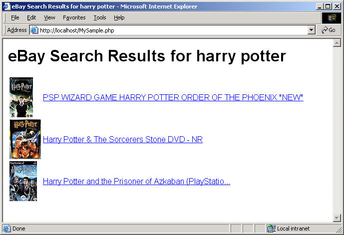

This tutorial shows how easy it is to use the eBay Finding API with HTTP POST requests. The tutorial shows you how to build a simple PHP application that submits a findItemsByKeywords call to search for eBay listings based on a keyword query. The code constructs an XML request which is submitted as an HTTP POST call and returns an XML response. The PHP program parses the XML response and constructs a simple HTML page that shows the results of the search.
After completing the tutorial, you'll have an application that displays an HTML page that looks similar to the following when it runs:

For notes about the tutorial, additional resources, and suggestions for next steps, please see Notes and Next Steps.
This tutorial contains the following sections:
The completed code is provided as a downloadable ZIP file, GettingStarted_PHP_XML_XML.zip. To run the program, you must replace instances of "MyAppID" in the tutorial code with your own production AppID that you can obtain from the eBay Developer's Program.
There are a few prerequisites for completing this tutorial:
Joining is free and you get 5,000 API calls a day just for joining! When you generate your application keys from your My Account page, note your Production AppID so you can substitute it in this tutorial where it says "MyAppID." The program in this tutorial makes calls to the eBay production site and makes use of live production data.
Apache HTTP Server is a popular web server, capable of running PHP applications. Apache is easy to install and configure. The steps in this tutorial are written with the assumption you are using Apache. PHP is, however, compatible with most popular web servers, so Apache is not strictly required. The tutorial code should run on any web server configured to support PHP.
The code for this tutorial is written in PHP. PHP 5 includes the SimpleXML extension, which is required for this tutorial. The tutorial also uses cURL to facilitate connecting and communicating with eBay servers. You must enable the php_curl extension for the tutorial to work.
In this step, you set up the basics for your PHP program. This includes setting up the following:
MySample.php, with the following code:
<?php
?>
<!-- Build the HTML page with values from the call response -->
<html>
<head>
<title>eBay Search Results for <?php echo $query; ?></title>
<style type="text/css">body { font-family: arial,sans-serif;} </style>
</head>
<body>
<h1>eBay Search Results for <?php echo $query; ?></h1>
<table>
<tr>
<td>
<?php echo $results;?>
</td>
</tr>
</table>
</body>
</html>
<?php
?>
Save this code in a file titled MySample.php in the DocumentRoot directory of your Apache web server (for example, C:\Program Files\Apache Software Foundation\Apache2.2\htdocs). The file includes PHP containers (<?php ... ?>) where you'll add code that makes an API request and parses the response. It also includes the HTML code that displays the data parsed from the XML response.
| HTTP Header Name | Value | Description |
|---|---|---|
| X-EBAY-SOA-OPERATION-NAME | findItemsByKeywords | The name of the call you are using. |
| X-EBAY-SOA-SERVICE-VERSION | 1.3.0 | The API version used by your application. You will normally use the latest version of the interface. |
| X-EBAY-SOA-REQUEST-DATA-FORMAT | XML | The format of the request. This value can indicate a request formatted as either XML or SOAP. |
| X-EBAY-SOA-GLOBAL-ID | EBAY-US | The eBay site you want to search. For example, the eBay US site (EBAY-US) or the eBay Germany site (EBAY-DE). |
| X-EBAY-SOA-SECURITY-APPNAME | AppID | The production AppID you obtain by joining the eBay Developers Program. |
| Call-Specific Parameter | Sample value | Description |
|---|---|---|
| keywords | harry potter | The string of words you want to match with eBay item information, such as titles. |
| paginationInput.entriesPerPage | 3 | The maximum number of items to return in the response. This is hard-coded as 3 in the program code. |
This code contains the following:
$endpoint variable that specifies the service endpoint.$query variable that specifies the keywords on which you want to base your query.To set up these items, enter the following code directly after the opening <?php statement at the top of your file:
error_reporting(E_ALL); // Turn on all errors, warnings, and notices for easier debugging // API request variables $endpoint = 'http://svcs.ebay.com/services/search/FindingService/v1'; // URL to call $query = 'harry potter'; // Supply your own query keywords as needed
This first step sets up the basics for your PHP program. Proceed to the next step to add the function that does most of the program's work.
In this step you create a function that sets up a session with the service, constructs the call, makes the call, closes the session, and returns the response.
The rest of the steps in this section add code to the function to perform the following tasks:
Add the following code in side the PHP tags at the bottom of the MySample.php file (<?php ... ?>).
function constructPostCallAndGetResponse($endpoint, $query) {
} // End of constructPostCallAndGetResponse function
This PHP code defines the $xmlrequest variable and assigns it values to construct a complete request with a keyword query and pagination.
Add the following code inside the curly braces ("{ }") of the constructPostCallAndGetResponse() function added in the preceding step.
global $xmlrequest; // Create the XML request to be POSTed $xmlrequest = "<?xml version=\"1.0\" encoding=\"utf-8\"?>\n"; $xmlrequest .= "<findItemsByKeywordsRequest xmlns=\"http://www.ebay.com/marketplace/search/v1/services\">\n"; $xmlrequest .= "<keywords>"; $xmlrequest .= $query; $xmlrequest .= "</keywords>\n"; $xmlrequest .= "<paginationInput>\n <entriesPerPage>3</entriesPerPage>\n</paginationInput>\n"; $xmlrequest .= "</findItemsByKeywordsRequest>";
Add the following code just after the last line of the $xmlrequest variable ($xmlrequest .= "</findItemsByKeywordsRequest>";).
// Set up the HTTP headers
$headers = array(
'X-EBAY-SOA-OPERATION-NAME: findItemsByKeywords',
'X-EBAY-SOA-SERVICE-VERSION: 1.3.0',
'X-EBAY-SOA-REQUEST-DATA-FORMAT: XML',
'X-EBAY-SOA-GLOBAL-ID: EBAY-US',
'X-EBAY-SOA-SECURITY-APPNAME: MyAppID',
'Content-Type: text/xml;charset=utf-8',
);
MyAppID in the HTTP header code with your Production AppID.
| Important: This tutorial uses the production endpoint for the Finding API, so you must use your production AppID for the application to work. Retrieve your AppID from your My Account page. The request will fail if a Sandbox AppID is used. |
In the $headers variable added in the preceding step, replace the "MyAppID" value with your production AppID.
'X-EBAY-SOA-SECURITY-APPNAME: MyAppID',
This code initiates a cURL session and sets the headers and body for the POST request.
Add the following code after the $headers variable ($headers = array( ... );.
$session = curl_init($endpoint); // create a curl session curl_setopt($session, CURLOPT_POST, true); // POST request type curl_setopt($session, CURLOPT_HTTPHEADER, $headers); // set headers using $headers array curl_setopt($session, CURLOPT_POSTFIELDS, $xmlrequest); // set the body of the POST curl_setopt($session, CURLOPT_RETURNTRANSFER, true); // return values as a string, not to std out
The following code starts the cURL session, sending the findItemsByKeywords request via HTTP POST. The result of sending the request is assigned to the $responsexml variable, which is returned by the function for use later. As soon as the response is set, the session is closed. This function will be called by another function in the tutorial.
Add the following code after the last curl_setopt() function added in the preceding step.
$responsexml = curl_exec($session); // send the request curl_close($session); // close the session return $responsexml; // returns a string
MySample.php file.The tutorial code is not yet ready to run. Proceed to the next step to add the code that submits the API request and parses the response.
In this last step, you parse the response returned from the call. Even though each returned item contains a full set of item information, only a few select fields are retrieved from the response.
constructPostCallAndGetResponse() function and pass the response SimpleXML.
The simplexml_load_string() function calls the constructPostCallAndGetResponse() function. The constructPostCallAndGetResponse() function, which is described in Step 2, makes the findItemsByKeyword call and returns the XML response as a string of XML. The simplexml_load_string() function takes the XML string and returns an object, which the remaining code will parse.
Add the following code to the top PHP section, after the $query variable.
// Construct the findItemsByKeywords POST call // Load the call and capture the response returned by the eBay API // The constructCallAndGetResponse function is defined below $resp = simplexml_load_string(constructPostCallAndGetResponse($endpoint, $query));
The following PHP code creates rows to add to the HTML table in the HTML body of the MySample.php file. The code loops through the array of items in the search results, adding a new row to the table for each item. Each row consists of the item's gallery image and title. The title links to the item's View Item page.
Add the following code after the simplexml_load_string() function added in the preceding step:
// Check to see if the call was successful, else print an error
if ($resp->ack == "Success") {
$results = ''; // Initialize the $results variable
// Parse the desired information from the response
foreach($resp->searchResult->item as $item) {
$pic = $item->galleryURL;
$link = $item->viewItemURL;
$title = $item->title;
// Build the desired HTML code for each searchResult.item node and append it to $results
$results .= "<tr><td><img src=\"$pic\"></td><td><a href=\"$link\">$title</a></td></tr>";
}
}
else { // If the response does not indicate 'Success,' print an error
$results = "<h3>Oops! The request was not successful. Make sure you are using a valid ";
$results .= "AppID for the Production environment.</h3>";
}
MySample.php file. This file is now runnable, but we're not done yet. Skip ahead to Step 4 to see what it looks like, or proceed to the next step to add item filters to the request.
This step adds item filters to your request. This is done by first creating a PHP array of the item filters. A function then uses this array to create the proper XML code to be passed in the request.
You can reuse this function or a function like it to process item filters submitted through a web form.
Add the following array into the top PHP section (<?php ... ?>), below the $query variable line you added in Step 1. This array contains three item filters: MaxPrice, FreeShippingOnly, and ListingType.
// Create a PHP array of the item filters you want to use in your request
$filterarray =
array(
array(
'name' => 'MaxPrice',
'value' => '25',
'paramName' => 'Currency',
'paramValue' => 'USD'),
array(
'name' => 'FreeShippingOnly',
'value' => 'true',
'paramName' => '',
'paramValue' => ''),
array(
'name' => 'ListingType',
'value' => array('AuctionWithBIN','FixedPrice','StoreInventory'),
'paramName' => '',
'paramValue' => ''),
);
This function parses the item filter array, formats the filters as XML, and assigns their collective value to a variable, $xmlfilter.
Add the following code directly after the array you created in the preceding step ($filterarray = array( ... );).
// Generates an XML snippet from the array of item filters
function buildXMLFilter ($filterarray) {
global $xmlfilter;
// Iterate through each filter in the array
foreach ($filterarray as $itemfilter) {
$xmlfilter .= "<itemFilter>\n";
// Iterate through each key in the filter
foreach($itemfilter as $key => $value) {
if(is_array($value)) {
// If value is an array, iterate through each array value
foreach($value as $arrayval) {
$xmlfilter .= " <$key>$arrayval</$key>\n";
}
}
else {
if($value != "") {
$xmlfilter .= " <$key>$value</$key>\n";
}
}
}
$xmlfilter .= "</itemFilter>\n";
}
return "$xmlfilter";
} // End of buildXMLFilter function
// Build the item filter XML code
buildXMLFilter($filterarray);
Add the following line to the code defining the $xmlrequest variable, directly after the line that adds the closing keywords tag to the request ($xmlrequest .= "</keywords>\n";).
$xmlrequest .= $xmlfilter;
constructPostCallAndGetResponse() function.
The constructPostCallAndGetResponse() function is defined in the lower PHP section and it is used by the the simplexml_load_string() function in the upper PHP section. In both places, add $xmlfilter to the existing function parameters, $endpoint and $query.
The following code shows the constructPostCallAndGetResponse() function in the upper PHP section with the added $xmlfilter parameter in bold.
$resp = simplexml_load_string(constructPostCallAndGetResponse($endpoint, $query, $xmlfilter));
The following code shows the constructPostCallAndGetResponse() function in the lower PHP section with the added $xmlfilter parameter in bold.
function constructPostCallAndGetResponse($endpoint, $query, $xmlfilter) {
MySample.php file. The MySample.php file is complete! Proceed to the next step to see the results.
Open the file in a browser (http://localhost/MySample.php).
The result should look similar to the following:
Congratulations! You have used the eBay Finding API to search for items on eBay and to display the search results to a user.
For information about the business benefits of using the eBay Developers Program and for other important information, please see the Business Benefits page.
This section contains notes about the tutorial and suggestions.
You can earn money with the eBay Partner Network (eBay Affiliate Program)! Send users to eBay, and earn money for new active users (ACRUs) and successful transactions. For more information, visit the eBay Partner Network. This tutorial contains affiliate-related code. The code is commented-out because affiliate functionality is not available in the Sandbox environment.
For information about the URL parameters for affiliate tracking, see the Affiliate Tracking section in the eBay Finding API Users Guide.
The sample provided with this tutorial was built and tested on a Windows 2000 Server platform using PHP 5.3 for Win32 and Apache 2.2.4 for Windows.
This tutorial is based on the findItemsByKeywords call. See findItemsByKeywords in the Call Reference for descriptions of all the input and output parameters, call samples, and other information.
If you want your application to display the assembled XML request that is being sent to eBay, add the following PHP/HTML code just before the closing body tag (i.e., </body>):
<pre><?php echo htmlentities($xmlrequest);?></pre>
You can adapt this tutorial code to other Finding API calls easily by changing the value of the X-EBAY-SOA-OPERATION-NAME header, along with the values of the $xmlrequest opening and closing XML call tags. If you want to continue with a keyword search, change the name of the call to any of the other finding calls in the API (with the exception of findItemsByCategory and findItemsByProduct, those do not support keywords as input). Or, modify the program to use another call, with different types of input.
Here are some suggestions for ways you could modify or extend the tutorial code to learn more about the API and create a more interesting application:
More information about the eBay Finding API is available at these locations:
Share tips or code samples related to this call or document. Questions or observations are also welcome.
eBay employees moderate these notes to ensure they're pertinent to the document and relevant to the community. Your submission will show up for all developers when it's activated by the moderator.
© 2009–2010 eBay Inc. All rights reserved.
eBay and the eBay logo are registered trademarks of eBay Inc.
All other brands are the property of their respective owners.